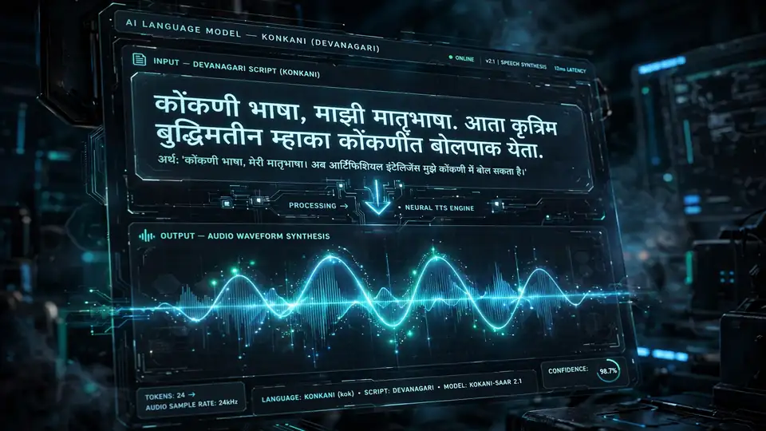
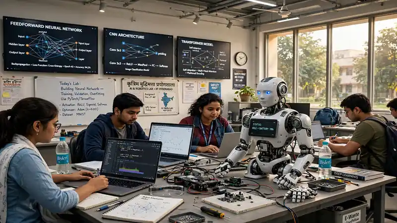

Goa launches AI Policy 2026 with Rs 250 crore fund and a Konkani LLM — betting on an AI economy beyond tourism
- The Government of Goa launched the BHASHINI Konkani Large Language Model at the Goa AI Tech Conclave in Panaji (October 22–23, 2026); the state’s Press Information Bureau release is dated October 23, 2026.
- Chief Minister Pramod Sawant unveiled AI Policy 2026 — a three-year framework (2026–2029) built on five pillars: skills and capacity building; startups and industry; capital and investment; policy, governance and infrastructure; and responsible, safe and ethical AI.
- The money: a Rs 250 crore innovation fund spread over five years, with a target of 50,000 AI-ready professionals by 2030.
- The launch demo showed real-time Konkani-to-English speech translation and transcription of addresses by the Chief Minister and IT Minister Rohan Khaunte.
- The Konkani LLM is being built under an agreement signed about six months ago, with the Higher Education Department and the Directorate of Official Languages; training data is crowdsourced via BHASHINI’s BhashaDaan platform.
- Also announced: an AI Centre of Excellence MoU with BITS Pilani Goa, a Goa AI Hackathon with 100 problem statements from 35 government departments, and robotics in the school curriculum via Sirena Technologies.
Goa is betting its future on something other than beaches. At the two-day Goa AI Tech Conclave in Panaji on October 22 and 23, Chief Minister Pramod Sawant unveiled the state’s first artificial intelligence policy — a three-year framework running 2026–2029, backed by a Rs 250 crore innovation fund and a target of training 50,000 AI-ready professionals by 2030.
Beyond the beaches
Goa’s tourism-heavy economy is the whole argument. IT Minister Rohan Khaunte told reporters that tourism makes up about 16.43% of the state’s GDP and 40% to 45% of its jobs, while mining — once worth around 17% — has faded. “The Covid years showed that relying on ‘one vertical’ is not enough,” he said, pitching research, design and creative work instead of factories, under the motto: ‘Build from Goa, scale up from Goa.’ (EquityPandit).
The policy, in five pillars
The AI Policy 2026 rests on five pillars: skills and capacity building; startups and industry; capital and investment; policy, governance and infrastructure; and responsible, safe and ethical AI (CXO Digitalpulse). On the ground, that means AI training expanding beyond the existing programme in Porvorim, with AI laboratories planned in educational institutions across more talukas, an IT Techno Centre in Porvorim bundling infrastructure, incubation and shared workspaces — and, with pragmatic restraint, at most ‘one or two’ data centres, which Khaunte noted create few jobs but use a lot of energy and water.
“With this progressive AI Policy 2026 and the whole thought of the Goa AI Mission 2027, the state aims to harness AI not merely as a tool for technological advancement, but as an enabler of inclusive growth, citizen-centric governance and new economic opportunities,” Khaunte said (Live News Goa).
A Konkani LLM
The headline product is linguistic. The conclave saw the launch of the BHASHINI Konkani Large Language Model — the state’s bet on Konkani-first technology, developed with Digital India BHASHINI under an agreement signed about six months ago (Express Computer). BHASHINI — the National Language Translation Mission launched by the Ministry of Electronics and Information Technology in 2022 — uses AI to enable real-time translation across India’s languages (NationPress).
The Higher Education Department and the Directorate of Official Languages are involved, and linguistic data is being collected through BhashaDaan, BHASHINI’s crowdsourcing platform, where citizens, students and language specialists contribute speech and text. The launch came with a live demonstration: BHASHINI’s speech technology translated and transcribed addresses by the Chief Minister and the IT Minister between Konkani and English in real time. The stated goal is AI that understands and generates Konkani across text and speech — powering local-language tools for governance and preserving the language’s cultural heritage in digital form — according to the state’s Press Information Bureau release, dated October 23, 2026 (CareerView24).

What it isn’t yet
Two caveats. The release gives no technical details — no training data size, supported tasks or accuracy results — and mentions no public access, download link or rollout dates. A proposed Data Daan data-sharing pilot is just that: proposed, not operational. For now this is the announcement of a foundation, not a finished, benchmarked product (CareerView24).
Hackathon, labs and a talent pipeline
Also announced: a Goa AI Hackathon built around 100 problem statements submitted by 35 government departments, rolled out in phases; a memorandum of understanding with BITS Pilani’s Goa campus to set up an AI Centre of Excellence for research and skill-building; and robotics in the school curriculum through Bengaluru-based Sirena Technologies. The state also presented 10 AI trainees prepared by TAWAI Studio — one already placed at McLaren Strategic Solutions — felicitated 12 “Drone Didis” who completed foundational drone training and are moving to advanced courses, and saw the release of the “Living Library of Goa Rural AI” report by Hyprlocl. Another project, Granthika, will support the digitisation and preservation of historical, legal and manuscript records with help from citizens, including senior residents.

Goa joins a small club of Indian states with a formal AI policy. The Konkani LLM is the most concrete product of the bunch — a live real-time translation demo is a long way from a public model, but it is a tangible proof of the policy’s direction. The second day of the conclave shifts to climate resilience and industrial transformation. The question now is whether the Rs 250 crore and the 50,000 trainees follow as fast as the announcements.
Frequently asked questions
What is Goa’s AI Policy 2026?
It is a three-year framework (2026–2029) built on five pillars — skills and capacity building; startups and industry; capital and investment; policy, governance and infrastructure; and responsible, safe and ethical AI — unveiled by Chief Minister Pramod Sawant at the Goa AI Tech Conclave in Panaji. It is backed by a Rs 250 crore innovation fund spread over five years and a target of 50,000 AI-ready professionals by 2030.
What is the Konkani LLM?
A large language model for the Konkani language, developed with Digital India BHASHINI under an agreement signed about six months ago. The Higher Education Department and the Directorate of Official Languages are involved; the goal is AI that understands and generates Konkani across text and speech, for local-language governance tools. Training data is being collected through BhashaDaan, BHASHINI’s crowdsourcing platform.
Is the Konkani LLM publicly available?
No. The state’s release mentions no public access, download link or rollout dates, and the proposed Data Daan data-sharing pilot is not operational. For now it is best read as the announcement of a foundation, not a finished product.